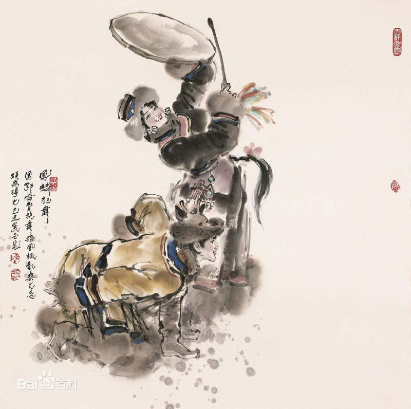

- 民族简介
- 文化习俗
- 历史发展
- 旅游介绍
鄂伦春族
鄂伦春族 鄂伦春族是世居我国东北部地区的人口最少的民族之一。据2000年第五次全国人口普查统计，鄂伦春族人口为8196人。鄂伦春语属阿尔泰语系满—通古斯语族通古斯语支，没有文字，现在主要使用汉语汉文。 鄂伦春族主要分布在内蒙古自治区呼伦贝尔盟鄂伦春自治旗、布特哈旗、莫力达瓦达斡尔族自治旗和黑龙江省北部的呼玛、逊克、爱辉、嘉荫等县。黑龙江省有鄂伦春族3871人，占鄂伦春族总人口的47%；内蒙古自治区有3573人，占44%。 [1] 在长期的狩猎生产和社会实践中，鄂伦春人创造了丰富多彩的精神文化，有口头创作、音乐、舞蹈、造型艺术等 。
元朝时，鄂伦春人被称为“林木中百姓”和“北山野人”，分布极为广阔，在辽阳行省的管辖之中。明朝时黑龙江以北有“乘鹿以出入”的“北山野人”，就是指游猎于贝加尔湖以东、黑龙江以北的“使鹿部”，也就是鄂伦春人。清初文献曾把鄂伦春人称为“树中人” 。 鄂伦春这一族称，在1640年4月28 日（崇德五年三月丑）是以“俄尔吞”出现的 。1683年（康熙二十二年）以后，文献中多次出现“俄罗春”、“鄂罗春”、“鄂伦春”等不同写法。从1690年（康熙二十九年）十月始，“鄂伦春”才作为统一的族称固定下来。“鄂伦春”是民族自称，即“使用驯鹿的人们”。另外，“鄂伦”的发音与驯鹿的发音（oron）相同，（cho）是表示人的附加成分，两者合起来为（oroncho），即“鄂伦春”，汉语就是“打鹿人”之意 。 根据居住区域的不同，鄂伦春人内部还有不同的名称。如居住于呼玛河流域的鄂伦春人自称库玛尔千；居住在逊克县、嘉荫县河边的鄂伦春人自称毕拉千；居住在甘河流域的鄂伦春人自称甘千；居住在托河流域的鄂伦春人自称托千等。比如，库玛尔千的“库玛尔”表示地点，“千”表示人的附加成分，表示某地人之意 。">
信仰
鄂伦春族信仰具有自然属性和万物有灵观念的萨满教。这种宗教与该民族特有的原始观念是紧密地结合在一起的。他们的宗教形式，表现为自然崇拜、图腾崇拜和祖先崇拜，“萨满”(巫师)是沟通神人之间的使者。萨满教信奉的神灵相当多。鄂伦春族崇拜的自然神有太阳神、月亮神、北斗星神、火神、天神、地神、风神、雨神、雷神、水神、青草神、山神等等。除自然崇拜外，鄂伦春先民还崇拜“牛牛库(熊)”、“老玛斯(虎)”图腾，鄂伦春人忌讳直乎熊、虎名、而是称它“宝日坎（神）”、“诺彦（官）”、“乌塔其（老爷）”。鄂伦春族对祖先崇拜十分盛行，而且现在亦如此 。
建筑
历史上，鄂伦春人的房屋主要有“斜仁柱”、产房、土窖子、木刻楞房、桦皮棚（林盘）、布棚（麦汗）、高脚仓库（奥伦）等。“斜仁柱”是鄂伦春族游猎时最主要的住房，呈圆锥形。骨架用长若干米的主杆、带杈的树干和20多根“斜仁”(树干)搭成，其覆盖物有冬季用的狍皮围子，需用60余张狍皮缝制，也用桦树皮、芦苇帘和布围子。“斜仁柱”正对门的铺位叫“玛路”，是供神的地方，只许男性客人和男主人坐卧。儿子、儿媳住左侧铺位，父母住右侧铺位。中间有火塘，上吊一铁锅，也有用三角架支锅的。“奥伦”是一种搭盖在森林中的高脚仓房，存放暂时不用的衣着、肉干、干菜、粮食等 。
服饰
鄂伦春族人的服饰也充分显示了狩猎民族的特色。鄂伦春妇女加工的狍皮结实、柔软、轻便，为了适应寒冷气候和狩猎生活所创制的狍皮衣和狍皮帽，独具匠心，别具特色。狍皮衣，鄂伦春语叫“苏恩”，多半保持狍皮的本色，用狍筋搓成细线缝制，形式多半为右偏襟长袍，身上装饰“弓剪形”、“鹿角形”、“云卷形”等图案，既美观又结实。鄂伦春族的狍头帽，戴上去很像一个狍子头，既生动又逼真，而且很保暖，非常精巧别致 。
饮食
过去，鄂伦春人的饮食以兽肉为主，鱼、野菜为辅，后来传入了米面。鄂伦春人喜欢食用狍子、鹿、犴、野猪、熊肉，同时也食用小动物和飞禽肉。做法主要有煮手把肉、烤肉、烧肉、炖肉汤、晒肉干、杂花菜、灌血清、骨髓油、生狍肝和腰子等。米面食主要有面片、油面片、烙面饼、烧面、面汤、油炒面、肉粥、稠李子粥、黏饭等。鄂伦春语称油面片为“图胡烈”，将擀好的面一片片揪进滚开的白水里，捞出后拌熟肉片、食盐、野韭菜花等佐料，倒入加热的野猪油或熊油，拌匀后食用。稠李子粥是鄂伦春族一种特殊的吃法，将稠李子放入粥中煮，爆开呈粉红色即可食用，色艳味美 [5] 。 鄂伦春族喜喝五味子汤和桦树汁。每年春季的五六月份，在桦树根部砍一个小口，桦树汁便会涌出，清澈透明，甘甜可口。鄂伦春人还喝一种称作“弟尔古色”的桦树浆，将桦树的外皮剥掉，用猎刀在树干上轻轻刮下乳白色的粘稠状树液，其味甘甜清爽 。
历史
关于其族源，主要有两种说法，一是室韦说，二是肃慎说。学界多倾向于后者。十七世纪中叶以前，鄂伦春人分布于贝加尔湖以东、黑龙江以北，以精奇里江为中心的广大地区。历史上这里主要是钵室韦人和深末怛室韦人的活动区域，因此，隋朝时的钵室韦、深末怛室韦应是鄂伦春族先民的主要来源，北室韦亦有可能参与了族体形成过程。唐朝时室韦发展为20余部，唐设室韦都督府加以管辖。据文献记载，其中的婆莴和落俎部分布于今黑龙江以北、外兴安岭以南。辽朝的室韦部在今嫩江上游以北及外兴安岭以南，黑龙江中、上游地区。辽设室韦国王府，圣宗时又设室韦节度使，隶西北路招讨司，对这一带的室韦人等进行管辖。金朝的火鲁火疃谋克管辖外兴安岭以南地区 。
清朝时期 1640年，清政府将“索伦部”分编为八牛录（佐领），鄂伦春人为索伦部中的一部分。康熙八年（1669年），在宁古塔将军之下设布特哈（打牲部落）八旗，管理分布在黑龙江上、中游的鄂伦春、鄂温克、达斡尔等族 。 1683年（康熙二十二年），从原来统辖吉林、黑龙江的宁古塔将军析出黑龙江将军。黑龙江将军之下设八城，分设副都统、总管等官员管辖。对于鄂伦春族的管理，将其分为“摩凌阿鄂伦春”(骑马的鄂伦春人)和“雅发罕鄂伦春”(步行的鄂伦春人)两部分。被编入布特哈(打牲)八旗“充官兵者”,称作“摩凌阿鄂伦春”,没有编入布特哈八旗,“戈猎山薮仅供纳貂役者”,称作“雅发罕鄂伦春”。后者分设五路八佐,每佐设鄂伦春族佐领一人,每年派名为“谙达”的人到当地去征收貂皮 。
17世纪中叶，沙俄侵犯中国黑龙江流域。1665年（康熙四年），沙俄侵占了黑龙江上游北岸的雅克萨城，烧杀抢掠当地居民。1685年（康熙二十四年），在清军第二次收复雅克萨城的战役中，有565名鄂伦春族士兵参战，对雅克萨之战的胜利做出了贡献。1732年（雍正十年），清政府抽调鄂伦春族兵259名，连同达斡尔等族兵共3000人编为八旗，在呼伦贝尔的济拉嘛泰河口设城驻防，巡逻边境，保卫边疆。1900年（光绪二十六年），沙俄入侵，将我江东64屯各族人民赶至江边射杀。库玛尔路协领寿廉带领鄂伦春族马队官兵500人痛击了入侵者 。
日伪时期 1931年“九一八”事变后，日本侵占东北，将原库玛尔路、毕拉尔路、阿里多布库尔路、托河路置于伪黑龙江省民政厅蒙旗科管辖，各路协领公署虽未撤销，但已成了有名无实的机构。1934年，伪满洲国将东北和内蒙划分为14个省，伪黑河省管辖库玛尔路和毕拉尔路；伪兴安东省管辖阿里多布库尔路；伪兴安北省管辖托河路。同年7月废除八旗制，名义上仍保留路、佐制度，但协领和佐领已为傀儡，日本特务机关派到各地的“指导官”实际统治鄂伦春族。在日伪统治时期，对鄂伦春族采取了民族隔离政策，与其他民族悠久的联系被割断 。
建国之后 1951年4月7日，中央人民政府政务院批准成立鄂伦春旗，鄂伦春族获得了民族区域自治的权利，自主地管理区域内本民族内部事务。1952年5月31日“鄂伦春旗”改为鄂伦春自治旗 。 1957年，黑龙江省成立了呼玛县十八站、爱辉县新生、逊克县新鄂3个民族乡，1958年由新鄂乡划出新兴村成立新兴鄂伦春族乡。1958年，4个民族乡改为人民公社。1984年恢复民族乡建制，新成立白银纳民族乡 。
新生鄂伦春族乡
“高高的兴安岭，一片大森林，森林里住着勇敢的鄂伦春......”这是一曲家喻户晓的少数民族民歌，听着这旋律优美、热情豪放的歌曲，一个骑马挎枪的鄂伦春猎人的剽悍形象就会在眼前闪现。“鄂伦春”是民族的自称，是“山岭上的人”之意，也有解释为“使用驯鹿的人”。有人把鄂伦春人称为马背上的民族，他们的确是精骑善射的民族，世世代代在大、小兴安岭的森林里以狩猎为生。 早年，他们居无定所，过着游猎生活。解放前，私有制虽然确立，但鄂伦春族还保留着原始公社的残余。鄂伦春的民族公社叫“穆昆”，是同一父系血统人民的共同体。“穆昆”是鄂伦春语，即“兄弟们”或“同姓人”的意思。“穆昆”有各个“乌力楞”组成，“乌力楞”是鄂伦春语，即“子孙们”的意思，指同一父系所传的 子孙。一个“乌力楞”就是一个父系家族，由几个或几十个“斜仁柱”组成。 “斜仁柱”，类似美洲印地安人的庐帐住所，是非常适合游猎生活的居住之所。它用松木或桦木做支架，盖上桦树皮，冬季用兽皮围盖，底部直径约七八米，高五六米，地中间生篝火，可做饭，取暖和照明。新中国成立后，党和政府关心鄂伦春人的生活，在依山傍河的地方为他们建造新居，把他们从散居的山里请下来。1953年，鄂伦春人实现了定居，一步跨越千年，结束了原始社会生活。鄂伦春族是我国11个从原始社会末期直接进入社会主义社会的少数民族之一。